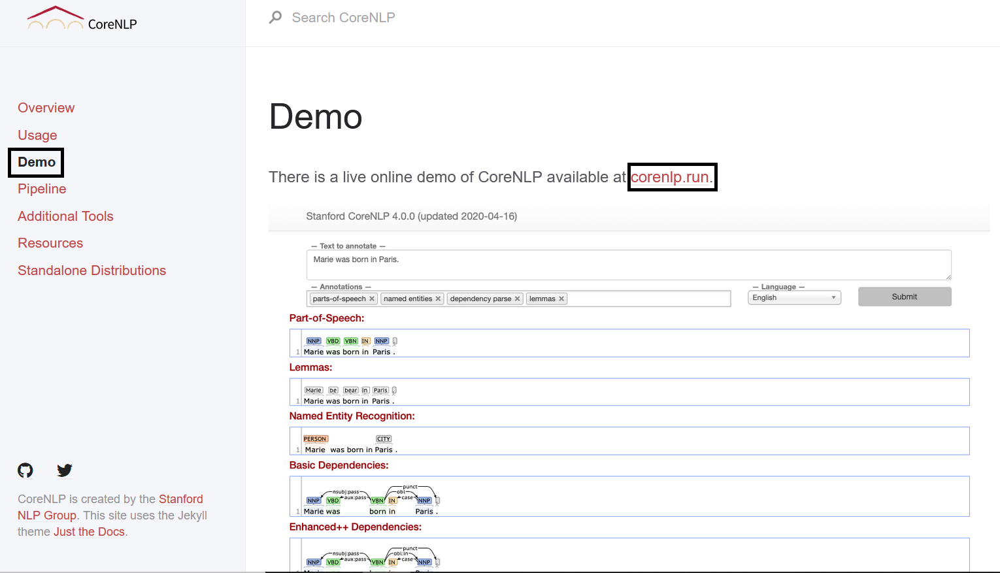
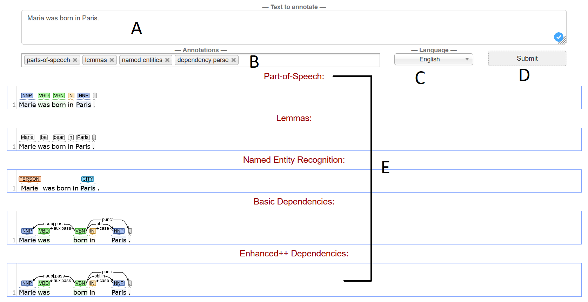

Tutorial em vídeo:
Tutorial em texto:
1. Primeiro devemos acessar o site da
Stanford CoreNLP.
Na página inicial temos uma breve introdução da ferramenta e no lado
esquerdo temos todos os tópicos abordados pela página.
1.2 Ao clicar sobre o botão Demo seremos direcionados para a página abaixo onde teremos uma demonstração de como a ferramenta funciona e ao clicar sobre o hiperlink corenlp.run seremos redirecionados para um ambiente virtual para que possamos testar a ferramenta.
Abaixo segue a explicação de cada campo:
- A – Local onde deve ser adicionado o texto com a finalidade de ser analisado, neste exemplo vamos usar a frase: “Marie was born in Paris.”
- B - Nesta área podemos adicionar ou remover as anotações linguísticas que serão analisadas.
- C – Neste campo selecione a língua do texto de entrada.
- D – Após realizar os passos anteriores, clique no botão “submit”, e obterá o texto analisado.
- E – Pronto! Texto analisado.
Importante ressaltar que essa ferramenta permite analisar o texto através de palavras isoladas relacionadas ao contexto prévio de seu banco de dados. Muito útil para realização de pesquisas científicas, porém tem como pontos negativos a não disponibilização de material de apoio para a utilização da plataforma e o não reconhecimento da língua portuguesa.